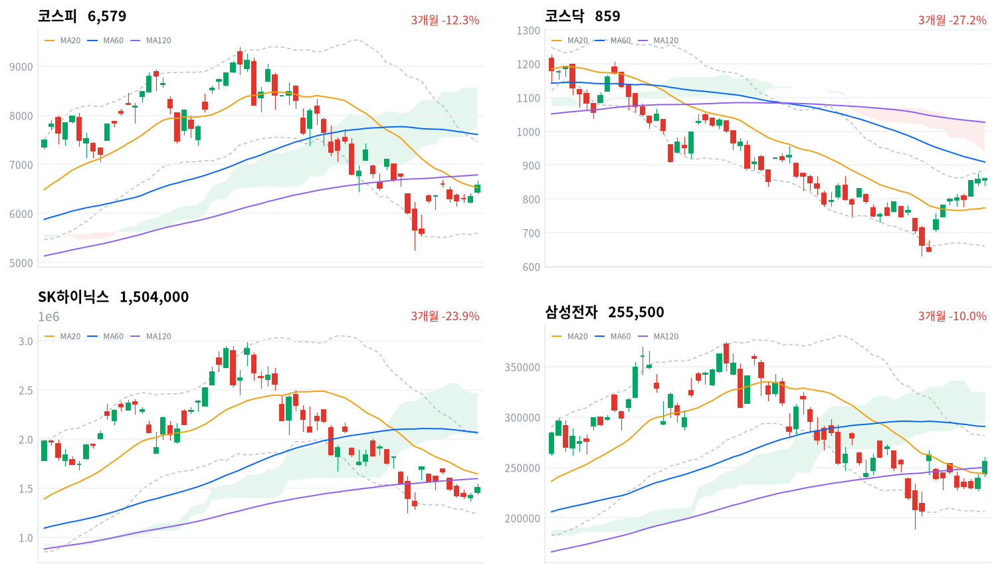
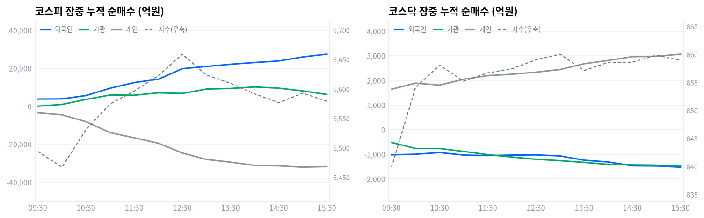

동인 코스피는 전일 종가(6,345.53포인트) 대비 갭업 출발한 6,438.50포인트에서 완만한 상승을 이어가 정오 무렵 12시30분 6,658.89포인트까지 올랐고(일중 고가 6,668.43포인트는 그 부근에서 형성된 것으로 추정) 오후 들어 상승폭 일부를 반납하며 6,579.04포인트(+3.68%)로 마감했다 — 3거래일 연속 상승이다. 코스닥은 854.85포인트에서 출발해 09시30분 839.86포인트까지 밀렸다가(일중 저점과 일치) 반등해 13시 860.03포인트까지 올랐고(일중 고가 860.76포인트는 그 부근에서 형성) 좁은 박스권을 거쳐 858.91포인트(+0.12%)로 강보합 마감했다. 간밤 미국 증시에서 AI 인프라 기업의 실적 서프라이즈(코어위브 대규모 수주잔고 공개, 슈퍼마이크로 시장 기대 상회 가이던스)로 필라델피아반도체지수가 강세를 보인 여파가 국내 반도체 대형주로 이어져, 삼성전자(+6.68%, 25만5500원)·SK하이닉스(+5.54%, 150만400원)가 지수 상승을 견인하고 코스피200선물지수 급변동에 매수 사이드카(올해 23번째)가 발동됐다.
크로스에셋·수급 정합성 수급은 가격 상승과 뚜렷이 정합했다. 코스피에서 외국인이 2조8354억원, 기관이 5279억원을 순매수(모두 당일 잠정)한 반면 개인은 3조1911억원을 순매도해 전형적인 '외국인·기관 쌍끌이-개인 역행' 구도가 나타났다. 업종별로도 반도체와반도체장비가 +5.98%를 기록하며 171개 종목 중 129개가 오르는 폭넓은 상승(breadth 0.754)을 보여 상승률뿐 아니라 참여 폭도 뒷받침됐고, 거래대금 상위에서도 삼성전자(6.87조원)·SK하이닉스(6.28조원)에 반도체 테마 ETF 8종 합산(1.65조원)까지 가세해 개별주 직접 매수와 바스켓 매수가 함께 실린 흐름이 확인된다. 다만 코스닥은 개인이 3127억원 순매수한 반면 외국인·기관은 각각 1623억원·1459억원 순매도해, 반도체 자금이 대형주 중심의 코스피에 쏠리고 코스닥이 상대적으로 소외된 정합성 괴리가 함께 드러난다.
다음 촉매·확인 트리거 기술적으로 코스피는 20일선(6,528.94포인트)을 0.77% 웃돌지만 일목균형표 구름대(7,724.91~8,561.66포인트)와는 여전히 거리가 멀어(구름 하단 대비 below), 오늘의 강한 반등이 추세 전환으로 확정되려면 120일선(6,786.55포인트) 회복 여부를 지켜봐야 한다. 장중 수급에서도 기관 순매수가 14시13분 +1조609억원으로 정점을 찍은 뒤 정규장 마감(15시30분, +6157억원)까지 4452억원 가까이 되돌려졌는데 그중 연기금등은 -282억원으로 순매도 전환해, 오늘 상승이 정책성 장기자금보다 프로그램·트레이딩 자금에 더 기댔음을 시사한다. 다음 확인 지점은 8월27일 한은 금통위와 8월 중 예정된 한미 통상 고위급 회담 결과, 그리고 반도체 랠리가 코스닥·다른 업종으로 확산되는지 여부다.
| 지수 | 종가 | 등락률 | 일중 고가 | 일중 저가 |
|---|---|---|---|---|
| 코스피 | 6,579.04 | +3.68% | 6,668.43 | 6,413.50 |
| 코스닥 | 858.91 | +0.12% | 860.76 | 839.86 |
코스피는 전일 종가(6,345.53포인트) 대비 갭업 출발한 6,438.50포인트에서 장을 열어 완만하게 상승했다. 09시 6,435.60포인트로 잠시 눌린 뒤(일중 저점 6,413.50포인트) 오전 내내 우상향해 12시30분 6,658.89포인트까지 올랐고, 일중 고가 6,668.43포인트는 그 부근에서 형성된 것으로 보인다. 오후 들어서는 13시 6,623.49포인트, 14시30분 6,576.80포인트로 상승폭을 반납하다 마지막 15시30분 6,579.04포인트로 마감해 상승분 대부분은 지켜냈다.
코스닥은 854.85포인트에서 출발해 09시30분 839.86포인트까지 밀렸는데(일중 저점과 정확히 일치) 이후 반등해 10시 854.13포인트를 회복하고 13시 860.03포인트까지 올랐다(일중 고가 860.76포인트는 그 부근에서 형성). 이후 858~860포인트대 좁은 박스권에서 등락하다 858.91포인트로 마감했다.
간밤 미국 증시에서 코어위브의 대규모 수주잔고 공개와 슈퍼마이크로의 시장 기대를 웃도는 가이던스 등 AI 인프라 기업의 실적 서프라이즈로 필라델피아반도체지수가 상승한 여파가 국내 반도체 대형주로 이어졌다(세계일보·파이낸셜뉴스 등 보도). 삼성전자·SK하이닉스 급등에 유가증권시장에서 코스피200선물지수 급변동으로 매수 사이드카가 발동됐다(올해 23번째, 이투데이·헤럴드경제 등 보도).

코스피 코스피는 6,579.04포인트로 마감해 20일선(6,528.94포인트)을 0.77% 웃돌아 단기 지지선 위에 있지만, 60일선(7,610.43포인트)·120일선(6,786.55포인트)은 각각 13.55%·3.06% 밑돌아 이동평균은 혼조 배열이다. 일목균형표에서는 전환선(6,111.04)이 기준선(6,795.01) 아래에 있고 가격도 구름대(7,724.91~8,561.66포인트) 아래에 머물러 있어 추세 전환이 아직 완성되지 않은 그림이다. 상승 시나리오는 120일선(6,786.55포인트) 회복이 1차 트리거이며, 이를 넘어서면 20일 스윙 고점(7,704.93포인트)과 구름대 하단(7,724.91포인트)이 겹치는 구간이 다음 저항이다. 하락 시나리오는 20일선(6,528.94포인트) 이탈이 트리거로, 이 경우 20일·60일 스윙 저점이 겹치는 5,262.77포인트가 최후 지지선이다. 볼린저밴드 %b는 0.527로 중심선(6,528.94포인트) 부근에 위치해 방향성이 아직 뚜렷하지 않다.
코스닥 코스닥은 858.91포인트로 마감해 20일선(773.27포인트)을 11.08% 웃돌지만 60일선(908.99포인트)·120일선(1,026.79포인트)은 각각 5.51%·16.35% 밑돌아 이동평균은 역배열 구조를 유지하고 있다. 볼린저밴드 %b는 0.879로 상단(886.33포인트)에 바짝 붙어 단기 과열 신호가 뚜렷하다. 일목균형표에서는 전환선(759.05)이 기준선(753.07)을 웃돌아 단기 모멘텀은 우호적이지만 가격은 여전히 구름대(938.94~1,026.70포인트) 아래에 머물러 있다. 상승 시나리오는 20일 스윙 고점(875.16포인트) 돌파가 1차 트리거이며, 이를 넘어서면 볼린저 상단(886.33포인트)과 구름대 하단(938.94포인트)이 순차적 저항이다. 하락 시나리오는 20일선(773.27포인트) 이탈이 트리거로, 20일·60일 스윙 저점이 겹치는 630.99포인트가 최후 지지선이다.
SK하이닉스 SK하이닉스는 150만4000원으로 마감해 20일선(164만5850원)·60일선(206만8000원)·120일선(159만8025원)을 각각 8.62%·27.27%·5.88% 밑돌아 이동평균이 혼조 배열이다. 일목균형표에서는 전환선(154만5500원)이 기준선(179만4500원) 아래에 있고 가격 자체도 전환선 밑에 머물러 단기 모멘텀이 약하며, 구름대(206만4000~246만8500원) 아래에 위치한다. 상승 시나리오는 120일선(159만8025원) 회복이 1차 트리거이며, 이를 넘어서면 20일선(164만5850원)과 20일 스윙 고점(217만1000원)이 순차적 저항이다. 하락 시나리오는 볼린저 하단(124만2728.54원)과 거의 겹치는 20일·60일 스윙 저점(124만6000원) 이탈이 트리거로, 이 구간이 사실상 최후 지지선이다. 볼린저 %b는 0.324로 중심선 아래에 위치한다.
삼성전자 삼성전자는 25만5500원으로 마감해 20일선(24만4075원)·120일선(25만197.92원)을 각각 4.68%·2.12% 웃돌지만 60일선(29만733.33원)은 12.12% 밑돌아 이동평균이 혼조 배열이다. 일목균형표에서는 전환선(24만7250원)·기준선(24만9600원)을 모두 웃돌아 단기 모멘텀은 우호적이지만, 가격은 구름대(29만3750~32만5000원) 아래에 머물러 있다. 상승 시나리오는 20일 스윙 고점(28만4500원) 돌파가 1차 트리거이며, 이를 넘어서면 60일선(29만733.33원)과 구름대 하단(29만3750원)이 순차적 저항이고 60일 스윙 고점(37만4500원)이 궁극적 목표다. 하락 시나리오는 20일선(24만4075원) 이탈이 트리거로, 20일·60일 스윙 저점이 겹치는 18만9200원이 최후 지지선이다. 볼린저 %b는 0.653으로 중심선과 상단 사이에 위치한다.
위 레벨은 kr_technical.json의 이동평균·볼린저밴드·일목균형표·스윙 고저를 기계적으로 계산한 것으로, 투자 권유가 아니다.
코스피 수급표를 보면 외국인이 2조8354억원, 기관이 5279억원을 순매수(모두 당일 잠정)해 쌍끌이 매수를 이어간 반면 개인은 3조1911억원을 순매도했다. 대형 반도체주 중심의 랠리에 외국인·기관이 모두 화답한 하루였고, 개인은 급등 국면에서 차익 실현성 매도에 나선 모습이다.
| 코스피 (억원, 당일 잠정) | 개인 | 외국인 | 기관 |
|---|---|---|---|
| 2026-08-12 | -31,911 | +28,354 | +5,279 |
| 코스닥 (억원, 당일 잠정) | 개인 | 외국인 | 기관 |
|---|---|---|---|
| 2026-08-12 | +3,127 | -1,623 | -1,459 |
코스피에서 외국인·기관의 매수 방향은 지수 급등과 정확히 정합됐다 — 반도체와반도체장비 업종이 +5.98%(171종목 중 129종목 상승, breadth 0.754)로 폭넓게 오른 것과 겹치는 대목이다. 코스닥은 오히려 개인이 매수 주체였고 외국인·기관은 순매도로 대응해, 반도체 자금이 대형주 중심의 코스피에 집중되고 코스닥은 상대적으로 소외됐다는 해석이 가능하다.

| 시각 | 코스피 (억원) | 코스닥 (억원) | ||||
|---|---|---|---|---|---|---|
| 개인 | 외국인 | 기관 | 개인 | 외국인 | 기관 | |
| 09:30 | -3,500 | 3,771 | 30 | 1,640 | -1,023 | -523 |
| 10:00 | -4,553 | 3,855 | 958 | 1,887 | -999 | -767 |
| 10:30 | -8,158 | 5,620 | 3,568 | 1,809 | -931 | -767 |
| 11:00 | -13,912 | 9,460 | 5,910 | 2,046 | -1,034 | -887 |
| 11:30 | -16,632 | 12,466 | 5,778 | 2,195 | -1,054 | -1,016 |
| 12:00 | -19,507 | 14,189 | 7,033 | 2,251 | -1,034 | -1,113 |
| 12:30 | -24,647 | 19,773 | 6,719 | 2,334 | -1,027 | -1,205 |
| 13:00 | -28,031 | 20,926 | 9,027 | 2,442 | -1,069 | -1,261 |
| 13:30 | -29,466 | 22,076 | 9,342 | 2,675 | -1,242 | -1,331 |
| 14:00 | -31,180 | 23,003 | 10,130 | 2,809 | -1,314 | -1,412 |
| 14:30 | -31,407 | 23,817 | 9,492 | 2,961 | -1,469 | -1,431 |
| 15:00 | -32,122 | 25,921 | 8,030 | 2,976 | -1,477 | -1,444 |
| 15:30 | -31,782 | 27,377 | 6,157 | 3,063 | -1,527 | -1,483 |
코스피 외국인 누적선은 하루 종일 전환 없이 순매수 방향으로만 움직였다(turns 비어있음) — 09시09분 +340억원의 미미한 규모에서 시작해 15시19분 +2조7395억원까지 꾸준히 늘어난 단조 흐름이다. 개인 누적선도 반대 방향으로 단조로웠는데, 09시07분 +318억원의 소폭 매수에서 출발해 15시10분 -3조2467억원까지 매도가 계속 확대됐다.
코스닥에서도 세 주체 모두 전환 없이 단조 흐름을 보였다 — 개인은 09시01분 +581억원에서 15시21분 +3063억원까지 순매수를 늘렸고, 외국인·기관은 각각 09시01분 -426억원·-105억원에서 15시21분·15시19분 -1527억원·-1483억원까지 순매도를 확대했다. §3에서 본 코스피의 완만한 오전 상승-오후 되돌림 궤적과 견줘보면, 지수가 정오 고점 대비 되밀린 오후에도 외국인 누적 매수 자체는 흔들림 없이 계속 확대돼 오늘 랠리의 실질적 매수 주체가 외국인이었음을 보여준다.
코스피 기관 누적선은 09시25분 순매도에서 순매수로 전환된 뒤 14시13분 +1조609억원까지 늘어 하루 중 최고치를 찍었고, 이후 정규장 마감(15시30분, session_last)까지 +6,157억원으로 되밀렸다 — 정점 대비 약 4,452억원이 빠졌다. 세부적으로 보면 금융투자(프로그램·선물 연계 성격) 누적은 14시30분 +7,990억원까지 늘었다가 15시30분 +4,733억원으로 줄었고, 연기금등(정책성 장기자금)은 11시00분 +2,280억원까지 늘었다가 계속 줄어 15시30분에는 -282억원으로 순매도 전환했다.
정규장 마감 무렵 기관 누적 순매수를 지지한 쪽은 연기금이 아니라 금융투자였던 셈이고, 이는 바로 아래 프로그램 매매에서 코스피 비차익이 +4,039억원 순매수를 기록한 것과 방향이 겹친다 — 오늘 기관 매수의 실질 색깔은 정책성 장기자금보다 프로그램·트레이딩 자금에 더 가깝다.
정규장 마지막 관측치(session_last, 15시30분)와 확정치를 비교하면 외국인은 +2조7377억원에서 +2조8354억원으로(+977억원) 늘었고, 기관은 +6,157억원에서 +5,279억원으로(-878억원) 줄었으며, 개인은 -3조1782억원에서 -3조1911억원으로(-129억원) 더 팔린 것으로 정정됐다. 외국인은 장 마감 후 추가 매수가 확인된 반면 기관은 소폭 되돌림이 있었던 셈이라, 다음 거래일에는 이 정정 패턴이 반복되는지와 함께 기관의 연기금 라인이 순매수로 복귀하는지를 확인할 필요가 있다.
| 구분 (억원, 당일 잠정) | 차익 순매수 | 비차익 순매수 | 전체 순매수 |
|---|---|---|---|
| 코스피 | -1,163 | +4,039 | +2,876 |
| 코스닥 | -14 | -1,189 | -1,203 |
코스피 프로그램 매매는 비차익(방향성 바스켓) +4,039억원 순매수가 전체 순매수(+2,876억원)를 견인했고 차익(선물 연계) -1,163억원 순매도가 일부 상쇄했다. 비차익 순매수 방향은 외국인 현물 순매수(+2조8354억원, 당일 잠정) 방향과 정합적이라, 기관·외국인의 방향성 매수 의도가 프로그램에서도 함께 확인된다.
반면 코스닥은 비차익 -1,189억원, 차익 -14억원으로 전체 -1,203억원 순매도를 기록해 코스닥 기관 순매도(-1,459억원, 당일 잠정)와 방향이 일치한다 — 반도체 랠리 자금이 코스피에 쏠리고 코스닥 프로그램은 오히려 매도 우위였던 셈이다.
| 순위 | 종목/ETF | 구분 | 거래대금 | 거래량 | 비고 |
|---|---|---|---|---|---|
| 1 | 삼성전자 | - | 6.87조 | 27,102,479 | - |
| 2 | SK하이닉스 | - | 6.28조 | 4,204,301 | - |
| 3 | 반도체 테마 ETF | 롱 | 1.65조 | 60,992,731 | 8종 합산 |
| 4 | LG전자 | - | 0.62조 | 3,086,187 | - |
| 5 | 삼성전자우 | - | 0.59조 | 3,146,502 | - |
| 6 | SK하이닉스 레버리지 | 롱 | 0.47조 | 62,008,503 | 2종 합산 |
| 7 | 대원전선 | - | 0.41조 | 26,276,489 | - |
| 8 | 한국콜마 | - | 0.33조 | 2,512,264 | - |
| 9 | 금호건설 | - | 0.29조 | 21,100,558 | - |
| 10 | 화장품 테마 ETF | 롱 | 0.21조 | 28,348,291 | 2종 합산 |
오늘 거래대금 상위 10위 안에는 SK하이닉스 레버리지(0.47조원)를 비롯한 롱 상품만 들었고 인버스(숏) 상품은 하나도 진입하지 못했다. 최근 거래일에 자주 보이던 레버리지·인버스 동시 진입 구도와 달리 오늘은 롱 포지션 일색이라, 개인 투자자의 방향성 베팅이 한쪽으로 크게 쏠렸음을 보여준다.
반도체 테마 ETF(8종 합산 1.65조원)는 삼성전자(6.87조원)·SK하이닉스(6.28조원) 개별주 거래대금 합계(13.15조원)의 10분의 1 수준에 불과해, 오늘 반도체 매수는 바스켓보다 개별 종목 직접 매수 위주였다고 판정할 수 있다. 화장품 테마 ETF(2종 합산 0.21조원)는 §7의 화장품 업종 상승(+4.24%, breadth 0.646)과 방향이 일치하는 소규모 자금 유입으로 읽힌다.
위 섹터 차트(1D 기준)에서는 반도체(+4.20%)·방산(+3.77%)·로봇(+2.65%)이 상위를 차지했다. kr_industry.json 기준 GICS 업종에서는 반도체와반도체장비가 +5.98%(171종목 중 129종목 상승, breadth 0.754)로 폭넓은 상승 주도(leading: true)를 확인할 수 있어, 상승률과 개별종목 참여도가 함께 뒷받침된 가장 신뢰도 높은 주도 업종이다. 우주항공과국방(+4.58%, 33종목 중 26종목 상승, breadth 0.788)도 방산 테마와 궤를 같이하며 폭넓게 올랐다.
반면 전자제품(+12.4%, breadth 0.562)·인터넷과카탈로그소매(+11.06%, breadth 0.5)는 등락률 자체는 가장 높지만 각각 16종목·6종목의 작은 표본에 breadth가 상대적으로 낮아, 소수 종목이 등락률을 끌어올린 경우로 해석하는 편이 안전하다. 핸드셋(+2.85%, 57종목 중 27종목 상승, breadth 0.474)은 leading:false로 분류돼 좁은 상승·개별종목 장세로 나타났다 — 상승률만 보고 업종 전체가 주도했다고 단정할 수 없는 사례다.
삼성전자는 오늘 +6.68%(25만5500원) 급등하며 거래대금 1위(6.87조원)에 오르고 지수 상승을 견인했다. 간밤 미국 AI 인프라 기업의 실적 서프라이즈로 반도체 수요 견조함이 재확인된 여파다(세계일보·파이낸셜뉴스 등 보도).
SK하이닉스는 +5.54%(150만400원, 장중 한때 +7% 이상)로 거래대금 2위(6.28조원)에 올랐다. 삼성전자와 함께 코스피200선물지수 급변동을 이끌어 매수 사이드카 발동(올해 23번째)의 직접 배경이 됐다.
대원전선(거래대금 7위, 0.41조원)은 호남(광주) 반도체 클러스터 조성 기대로 이틀째 급등했다. 정부가 광주 군공항 부지를 국가산업단지 후보지로 지정하고 전력·용수 등 기반시설 확보 계획을 제시하면서 지역 전력·인프라주 강세가 이어지고 있다(이투데이 보도).
금호건설(거래대금 9위, 0.29조원)은 같은 재료로 상한가(+29.94%, 1만4930원)를 기록하며 이틀 연속 상한가권에 머물렀다. 지역 건설주 전반의 수주 기대감이 부각되고 있다.
한국콜마(거래대금 8위, 0.33조원)는 1분기 실적 서프라이즈(한국법인 견조 성장, 중국법인 흑자전환, 미국법인 적자폭 축소) 이후 증권가 목표주가 상향 랠리가 이어지며 거래대금 상위권에 진입했다(다음 특징주 보도).
이번 사이클 입력 자료에는 원/달러 환율 데이터가 포함되지 않아, 아래 국고채 금리만 다룬다.
| 지표 | 금리 | 전일比(bp) | 기준일 |
|---|---|---|---|
| 국고채 3년 | 3.791% | -1.7bp | 2026-08-12 |
| 국고채 10년 | 4.294% | -0.7bp | 2026-08-12 |
| CD 91일 | 2.940% | +1.0bp | 2026-08-12 |
| 회사채 AA- 3년 | 4.496% | -0.8bp | 2026-08-12 |
| 한국은행 기준금리 | 2.750% | +25.0bp | 2026-07 (7월 기준, 전월比) |
국고채 3년물(-1.7bp)이 10년물(-0.7bp)보다 더 큰 폭으로 내려 10년-3년 스프레드가 전일 49.3bp(10년 4.301%-3년 3.808%)에서 50.3bp(10년 4.294%-3년 3.791%)로 소폭 확대됐다 — 완만한 스티프닝이다. 국고채 10년물 하락은 오늘 코스피 외국인의 대규모 순매수(+2조8354억원, 당일 잠정)와 방향상 정합적이지만, 원/달러 데이터가 없어 삼각 연계(금리·수급·환율)를 완전히 검증하기는 어렵다.
회사채 AA- 3년(4.496%)과 국고채 3년(3.791%)의 신용스프레드는 70.5bp로, 전일(69.6bp, 회사채 4.504%-국고채 3.808%) 대비 소폭 확대됐지만 변동폭이 크지 않아 신용 심리 자체는 안정적인 수준이다. 국고채 3년물(3.791%)은 한국은행 기준금리(2.75%, 7월 기준)보다 104.1bp 높아, 8월27일 금통위에서 즉각적인 인하보다는 동결 내지 신중한 스탠스를 시장이 선반영하고 있는 것으로 읽힌다.
3차 상법 개정안(자사주 1년 내 의무 소각 원칙, 예외적 보유·처분은 주주총회 승인 필요)은 2026년 3월 국회 본회의를 통과해 같은 달 공포·시행됐다(법률신문·김앤장·삼일PwC 자료 기반). 현재는 개별 기업 이사회가 자사주를 활용한 교환사채 발행 제약, 임원보상·제3자 매각용 자사주 처분계획의 주총 상정 등 실무 대응 단계에 들어선 국면이다.
전달 경로는 수급과 멀티플 두 갈래다. 자사주 매입 후 소각이 강제되면 유통주식수가 줄어 EPS가 개선되는 밸류업 프리미엄의 구조적 지지선이 되는 반면, 자사주를 자금조달 수단(교환사채 등)으로 써온 기업은 재무 유연성이 줄어드는 제약 요인이다.
자사주 보유 비중이 높던 대형 지주사·금융지주가 주주환원 매력 부각의 수혜 구간으로 꼽히지만, 오늘 은행 업종은 -0.72%(11종목 중 3종목 상승, breadth 0.273)로 하락해 이 재료가 가격에 반영된 흔적은 뚜렷하지 않다 — 오늘 랠리는 반도체 재료가 압도했고 지배구조 재료는 아직 반영되지 않은 상태로 판단한다.
다음 확인 지점은 개별 기업의 2026년 주총 시즌 자사주 처분계획 상정 여부와 후속 시행령·가이드라인 발표이며, 구체 일정은 미확정이다.
한은 통화정책방향 결정회의는 연 8회(1·2·4·5·7·8·10·11월) 열리며, 8월 회의는 8월27일로 예정돼 있다(뉴시스·한국은행 자료 기반). 오늘(8월12일) 기준으로는 회의까지 2주 이상 남아 당일 수급에는 직접 영향을 미치지 않았고, 금리 기대는 밸류에이션의 배경 변수로만 작용했다.
전달 경로는 멀티플이다 — 국고채 3년물(3.791%, 전일比 -1.7bp)이 기준금리(2.75%, 7월 기준)보다 104.1bp 높게 형성돼 있어, 시장은 아직 즉각적인 인하보다는 동결 내지 신중한 스탠스를 선반영하고 있는 것으로 읽힌다. 최근 반도체 랠리로 코스피가 사상 최고권(6,579.04포인트)에 진입한 만큼, 금리 결정을 앞두고 변동성이 커질 여지가 있다.
인하 기대가 살아나면 성장주·고밸류 테크가, 동결이 이어지면 은행·보험 등 금리 민감 가치주가 상대적으로 유리하다. 오늘 은행(-0.72%)·증권(+0.39%, 39종목 중 29종목 상승 breadth 0.744) 업종의 엇갈린 등락은 금리 민감주 내에서도 방향이 통일돼 있지 않음을 보여준다.
다음 확인 지점은 8월27일 금통위 기준금리 결정과 그 전 발표되는 물가·수출 지표다.
한미 양국은 8월 중 고위급 회담을 통해 관세·투자 이슈를 패키지로 논의할 예정이다(Busan Haps·머니투데이 보도). 한국은 방위비 분담·대미 투자 확대·기술 협력을 카드로 '민감국가' 지정 해제를 추진 중이며, 반도체는 앞선 협상에서 대만 대비 불리하지 않은 대우를 확보했다는 점을 근거로 제시하고 있다.
전달 경로는 이익과 멀티플이다 — 협상 타결·지연 여부가 반도체·자동차 등 대미 수출 비중이 높은 업종의 이익 전망에 직접 영향을 주고, 통상 불확실성이 완화되면 밸류에이션 리레이팅 여지가 생긴다.
오늘 반도체와반도체장비 업종이 +5.98%(171종목 중 129종목 상승, breadth 0.754)로 폭넓게 급등했지만 직접 동인은 미국 AI 인프라 기업의 실적 서프라이즈였지 통상 협상 진전은 아니었다 — 즉 오늘 반도체 랠리에서 통상 재료는 아직 별도로 반영되지 않은 상태로 판단한다. 자동차(+1.29%, 12종목 중 10종목 상승)·우주항공과국방(+4.58%)도 오늘 온기가 있었지만 이 역시 협상 재료보다는 개별 수급·업종 흐름으로 설명되는 편이 자연스럽다.
다음 확인 지점은 8월 중 예정된 한미 고위급 회담 결과 발표이며, 구체 날짜는 미확정이다.